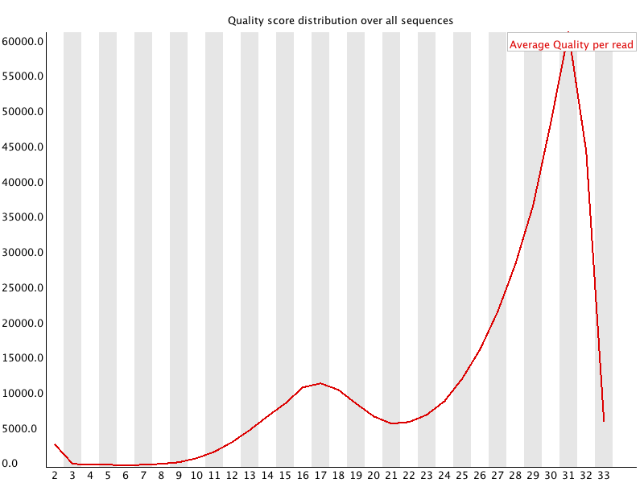
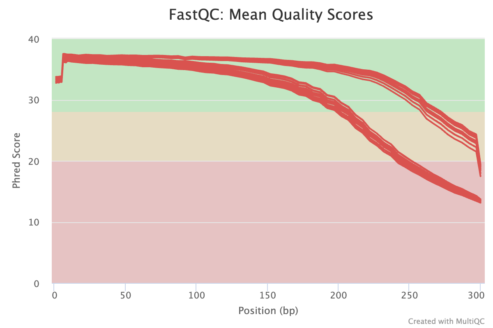
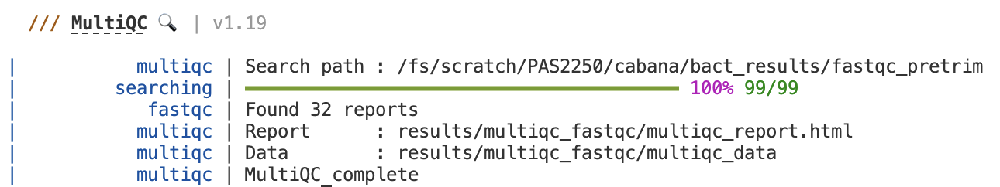

Read QC and Trimming
With FastQC, MultiQC, and Cutadapt
Introduction
The first series of steps our analysis workflow concerns the quality control (QC) & “pre-processing†of the reads.
The QC part will leave the data, which is stored in FASTQ files, untouched — whereas the pre-processing involves the removal of unwanted bits of sequence: in our case, amplicon primers. After the pre-processing, we will still have FASTQ files, just with somewhat less content.
Specifically, we will go through the following steps:
- QC with FastQC
- Summarizing FastQC results with MultiQC
- Removing primers with Cutadapt
Start a new VS Code session with an open terminal:
- Log in to OSC’s OnDemand portal at https://ondemand.osc.edu.
- In the blue top bar, select
Interactive Appsand then near the bottom of the dropdown menu, clickCode Server. - In the form that appears on a new page:
- Select OSC project
PAS2714 - The starting directory:
/fs/ess/PAS2714/<user>(replace<user>with your username) Number of hours:3- Click
Launch.
- Select OSC project
- On the next page, once the top bar of the box has turned green and says
Runnning, clickConnect to VS Code. - Open a Terminal by clicking =>
Terminal=>New Terminal.
1 FASTQ files
1.1 The FASTQ format
FASTQ is a very common output format of high-throughput sequencing machines — at least from Illumina sequencing, you will almost always receive the sequences in this format. Like most genomic data files, these are plain text files, and each sequence that is read by the sequencer (i.e., each “read”) forms one FASTQ entry represented by four lines. The lines contain, respectively:
- A header that starts with
@and e.g. uniquely identifies the read - The sequence itself
- A
+(plus sign) - One-character quality scores for each base in the sequence

The header line is annotated, with some of the more useful components highlighted in red.
For viewing purposes, this read (at only 56 bp) is shorter than what is typical.
The “Q†in FASTQ stands for “quality”, to contrast this format with FASTA, a more basic and generic format that does not include base quality scores. FASTQ files have the extension .fastq or .fq, but they are very commonly gzip-compressed, in which case their name ends in .fastq.gz or .fq.gz.
The quality scores we saw in the read above represent an estimate of the error probability of the base call. Specifically, they correspond to a numeric “Phred†quality score (Q), which is a function of the estimated probability that a base call is erroneous (P):
Q = -10 * log10(P)
For some specific probabilities and their rough qualitative interpretations for Illumina data:
| Phred quality score | Error probability | Rough interpretation | ASCII character |
|---|---|---|---|
| 10 | 1 in 10 | terrible | + |
| 20 | 1 in 100 | bad | 5 |
| 30 | 1 in 1,000 | good | ? |
| 40 | 1 in 10,000 | excellent | ? |
This numeric quality score is represented in FASTQ files not by the number itself, but by a corresponding “ASCII character†(last column in the table). This allows for a single-character representation of each possible score — as a consequence, each quality score character can conveniently correspond to (& line up with) a base character in the read. (For your reference, here is a complete lookup table — look at the top table, “BASE=33”).
1.2 Our FASTQ files
Listing our FASTQ files
First, let’s take a look at our list of FASTQ files:
ls -lh data/fastqtotal 150M
-rw-r-----+ 1 jelmer PAS0471 2.0M Mar 1 17:09 NW102AB_R1.fastq.gz
-rw-r-----+ 1 jelmer PAS0471 2.6M Mar 1 17:09 NW102AB_R2.fastq.gz
-rw-r-----+ 1 jelmer PAS0471 2.3M Mar 1 17:09 NW102C_R1.fastq.gz
-rw-r-----+ 1 jelmer PAS0471 3.0M Mar 1 17:09 NW102C_R2.fastq.gz
-rw-r-----+ 1 jelmer PAS0471 1.9M Mar 1 17:09 NW103AB_R1.fastq.gz
-rw-r-----+ 1 jelmer PAS0471 2.6M Mar 1 17:09 NW103AB_R2.fastq.gz
-rw-r-----+ 1 jelmer PAS0471 2.3M Mar 1 17:09 NW103C_R1.fastq.gz
-rw-r-----+ 1 jelmer PAS0471 3.1M Mar 1 17:09 NW103C_R2.fastq.gz
# [...output truncated...]Note in the file listing above that:
- There are two files per sample:
_R1(forward reads) and_R2(reverse reads). This indicates that we have data from paired-end reads, as is customary with amplicon metabarcoding. - The files all have a
.gzextension, indicating they have been compressed with the gzip utility.
1.3 Viewing FASTQ files
Next, we’ll take a peak inside one of these FASTQ files.
The head command prints the first lines of a file. Let’s use it try to and print 8 lines, which should show us two reads:
head -n 8 data/fastq/NW102AB_R1.fastq.gz�
Խے�8�E��_1f�"�QD�J��D�fs{����Yk����d��*��
|��x���l޴�j�N������?������ٔ�bUs�Ng�Ǭ���i;_��������������|<�v����3��������|���ۧ��3ĐHyƕ�bIΟD�%����Sr#~��7���1y�Ai,4
w\]"b�#Q����8��+[e�3d�4H���̒�l�9LVMX��U*�M����_?���\["��7�s\<_���:�$���N��v�}^����sw�|�n;<�<�oP����
i��k��q�ְ(G�ϫ��L�^��=��<���K��j�_/�[ÛV�ns:��U��G�z�ݎ�j����&��~�F��٤ZN�'��r2z}�f\#��:�9$�����H�݂�"�@M����H�C�
�0�pp���1�O��I�H�P�.Ȣe��Q�>���
�'�;@D8���#��St�7k�g��|�A䉻���_���d�_c������a\�|�_�mn�]�9N������l�٢ZN�c�9u�����n��n�`��
"gͺ�
���H�?2@�FC�S$n���Ԓh� nԙj��望��f �?N@�CzUlT�&�h�Pt!�r|��9~)���e�A�77�h{��~�� ��
# [...output truncated...]Ouch! 😳 What went wrong here? (Click for the solution)
What happened here is that we are directly seeing the contents of the compressed file, which is simply not human-readable.To get around the problem we just encountered with head, we might be inclined to uncompress these files, which we could do with the gunzip command. However, uncompressed files take up several times as much disk storage space as compressed ones. Fortunately, we don’t need to decompress them:
- Almost any bioinformatics tool will accept compressed FASTQ files.
- We can still view these files in compressed form, as shown below.
Instead, we’ll use the less command, which will automatically display gzip-compressed files in human-readable form:
less -S data/fastq/NW102AB_R1.fastq.gz@M02815:77:000000000-KPK85:1:2101:3678:10660 1:N:0:CCTAAGAC+TTCTAGCT
CGAGCAATCCACTCGAGTGCCAGCAGCCGCAGTAATACGGAGGGTGCGAGCGTTGTCCGGAATCACTGGGCGTAAAGGGCGCGTAGGCGGCGCGGATAGTCGGCGGTGAAAGCCCGGAGCTCAACTCCGGGTCGGCCGTCGATACTTCCGGGCTTGAGCACTGTAGAGGCAGATGGAATTCCGGGTGTAGCGGTGGAATGCGTAGAGATCCGGAAGAACACCGGTGGCGAAGGCGGTCTGCTGGGCAGTTGCTGACGCTGATGCGCGACAGCGTGGGGAGCAAACAGGATTAGATACC
+
CCCCCGGGGGGGGGGGGGGFGGGGGGGGGG+CFGGGGGGGGGGGGGGGGGGGGGGGGGGGGGGGGGGGGGGGGGGGGGGGGGGGGGGGGGGGGGGDGGGGGGGGGGGGGGGGGGGGGGGGGGGGGGGGGGGGGGGGGGGGGGGGGGGGGGGGGGGGGGGGGGGGGGGDGGGGGGGGGGGGGGGGGGGGGGGGGGGGGFGGGGGGGGGGGGGGGGEGGGGGGGGGGGGGGGGGGGGDGGGGGGGGGGGGGGFGGFGFFFFEBFFGFFFDGFGFGBFGFGFGFFFF6?FFFGBF?FBFFF
@M02815:77:000000000-KPK85:1:2108:2535:14400 1:N:0:CCTAAGAC+TTCTAGCT
CGAGCAATCCACTCGAGTGTCAGCCGCCGCGGTAATACAGAGGTCCCGAGCGTTGTTCGGATTCATTGGGCGTAAAGGGTGCGTAGGCGGCGGGGAAAGTCTGATGTGAAATCCTGGGGCTCAACCCTGGAACTGCATTGGATACTTCCTTGCTAGAGTACTGGAGAGGAAACTGGAATTTACGGTGTAGCAGTGAAATGCGTAGAGATCGTAAGGAAGACCAGTGGCGAAGGCGAGTTTCTGGACAGTTACTGACGCTGAGGCACGAAGGCCAGGGGAGCAAACGGGATTAGATACC
+
CCCCCCGFGFGGGC-FFFGFGFFGGDFFGGGGGECGEGGAEGGGGGGGFGGDGG7CFFGGDCCFGGFCF8FGGGGGGCEGDGGGGGCGGGGGGDEGGGGBFGGDFGGGDG<DFGGGGCEGGGD:FFGGGGFFGFGGFFFFGGGFGGCFGGFGGGGG9CGCGGGG7FGGC:FFGGGGGFGG<?FCGGGGGGGGGGG9CG<ACC?EG5CFGGGGF8CCCC:C@FGCFGGGGGC58=EEG8??77:9@:<3A>7AGFGGGGC?DFC?5<5>>BGGGFGGGGG>4?C42::3:DG=><<*)*less -S suppresses line-wrapping: lines in the file will not be “wrapped†across multiple lines
Exercise: Explore the file with less
less doesn’t print stuff to screen but instead opens it in a “pager”. After running the command above, you should be viewing the file inside the less pager.
You can move around in the file in several ways: by scrolling with your mouse, with up and down arrows, or, if you have them, PgUp and PgDn keys (also, u will move up half a page and d down half a page).
Notice you won’t get your shell prompt back until you press q to quit less.
2 Running FastQC for 1 sample
2.1 Intro to FastQC
FastQC is a ubiquitous tools for quality control of FASTQ files. Running FastQC or a similar program is the first step in nearly any high-throughput sequencing project. FastQC is also a good introductory example of a tool with a command-line interface.
For each FASTQ file, FastQC outputs an HTML file that you can open in your browser with about a dozen graphs showing different QC metrics. The most important one is the per-base quality score graph shown below.


2.2 Building our FastQC command
To run FastQC, we can use the command fastqc.
If you want to analyze one of your FASTQ files with default FastQC settings, a complete FastQC command to do so would simply be fastqc followed by the name of the file:
# (Don't run this)
fastqc data/fastq/NW102AB_R1.fastq.gzHowever, an annoying FastQC default behavior is that it writes its output files in the dir where the input files are — in general, it’s not great practice to directly mix your primary data and results like that!
To figure out how we can change that behavior, first consider that many commands and bioinformatics tools alike have an option -h and/or --help to print usage information to the screen. Let’s try that:
fastqc -hbash: fastqc: command not found...However, there is a wrinkle: while FastQC is installed at OSC1, we have to first “load it”. The way we will do this here is with a a so-called “Conda environment†that has FastQC installed along with the other programs we will need today.
Here’s how we can load that Conda software environment — we first load OSC’s (mini)conda installation, and then we can load (“activate”) the Conda environment that I created for you:
module load miniconda3
source activate /fs/ess/PAS0471/jelmer/conda/mbar24We won’t have time to get into this now, but you want to learn more about Conda / software usage at supercomputers, see this reference page elsewhere on the website.
Exercise: FastQC help and output dir
Again try to print FastQC’s help info, and figure out which option you can use to specify a custom output directory.
Click for the solution
fastqc -h and fastqc --help will both work to show the help info.
You’ll get quite a bit of output printed to screen, including the snippet about output directories that is reproduced below:
fastqc -h -o --outdir Create all output files in the specified output directory.
Please note that this directory must exist as the program
will not create it. If this option is not set then the
output file for each sequence file is created in the same
directory as the sequence file which was processed.So, you can use -o or equivalently, --outdir to specify an output dir.
With the added --outdir (or -o) option, let’s try to run the following FastQC command:
# We'll have to create the outdir ourselves, in this case
mkdir -p results/fastqc
fastqc --outdir results/fastqc data/fastq/NW102AB_R1.fastq.gzapplication/gzip
Started analysis of NW102AB_R1.fastq.gz
Approx 5% complete for NW102AB_R1.fastq.gz
Approx 10% complete for NW102AB_R1.fastq.gz
Approx 15% complete for NW102AB_R1.fastq.gz
[...truncated...]
Analysis complete for NW102AB_R1.fastq.gzSuccess!! 🎉
2.3 FastQC output files
Let’s take a look at the files in the output dir we specified:
ls -lh results/fastqctotal 1.2M
-rw-r--r-- 1 jelmer PAS0471 713K Feb 4 14:02 NW102AB_R1_fastqc.html
-rw-r--r-- 1 jelmer PAS0471 431K Feb 4 14:02 NW102AB_R1_fastqc.zip- There is a
.zipfile, which contains tables with FastQC’s data summaries - There is an
.html(HTML) file, which contains plots — this is what we’ll look at next
Exercise: Another FastQC run
Run FastQC for the corresponding R2 FASTQ file. Would you use the same output dir?
Click for the solution
Yes, it makes sense to use the same output dir, since as you could see above, the output file names have the input file identifiers in them. As such, we don’t need to worry about overwriting files, and it will be easier to have all the results in a single dir.
To run FastQC for the R2 (reverse-read) file:
fastqc \
--outdir results/fastqc \
data/fastq/NW102AB_R2.fastq.gzStarted analysis of NW102AB_R2.fastq.gz
Approx 5% complete for NW102AB_R2.fastq.gz
Approx 10% complete for NW102AB_R2.fastq.gz
Approx 15% complete for NW102AB_R2.fastq.gz
[...truncated...]
Analysis complete for NW102AB_R2.fastq.gzls -lh results/fastqc-rw-r--r-- 1 jelmer PAS0471 241K Mar 13 14:50 NW102AB_R1_fastqc.html
-rw-r--r-- 1 jelmer PAS0471 256K Mar 13 14:50 NW102AB_R1_fastqc.zip
-rw-r--r-- 1 jelmer PAS0471 234K Mar 13 14:53 NW102AB_R2_fastqc.html
-rw-r--r-- 1 jelmer PAS0471 244K Mar 13 14:53 NW102AB_R2_fastqc.zipNow, we have four files: two for each of our preceding successful FastQC runs.
3 Interpreting FastQC output
3.1 FastQC HTML modules
We’ll now go through a couple of the FastQC plots/modules, with first some example plots2 with good/bad results for reference.
Overview of module results
FastQC has “pass†(checkmark in green), “warning†(exclamation mark in orange), and “fail†(cross in red) assessments for each module, as you can see below.
These assessments are handy, but a “warning”/“fail†is not necessarily the bad news it may appear to be:
- Some of these modules are perhaps overly strict.
- Some warnings and fails are easily remedied or simply not a very big deal.
- FastQC assumes that your data is derived from whole-genome shotgun sequencing — some other types of data like RNA-seq data will therefore always trigger a couple of warnings and fails.

Basic statistics
This shows, for example, the number of sequences (reads) and the read length range for your file:

Per base quality sequence quality
This figure visualize the mean per-base quality score (y-axis) along the length of the reads (x-axis). Note that:
- A decrease in sequence quality along the reads is normal.
- R2 (reverse) reads are usually worse than R1 (forward) reads.
Good / acceptable:
Bad:
To interpret the quality scores along the y-axis, note the color scaling in the graphs (green is good, etc.), and see this table for details:
| Phred quality score | Error probability | Rough interpretation |
|---|---|---|
| 10 | 1 in 10 | terrible |
| 20 | 1 in 100 | bad |
| 30 | 1 in 1,000 | good |
| 40 | 1 in 10,000 | excellent |
Per sequence quality scores
This shows the same quality scores we saw above, but now simply as a density plot of per-read averages, with the quality score now along the x-axis, and the number of reads with that quality score along the y-axis:
Good:

Bad: 
Sequence length distribution
Will throw a warning as soon as not all sequences are of the same length (like below), but this is quite normal.

Adapter content
Checks for known adapter sequences. When some of the insert sizes are shorter than the read length, adapters can end up in the sequence – these should be removed!
Good: 
Bad: 
3.2 Checking your FastQC results
First, you’ll unfortunately have to download FastQC’s output HTML files to your computer:
- Find the FastQC HTML files in the file explorer in the VS Code side bar.
- Right-click on one of them, click
Download...and follow the prompt to download the file somewhere to your computer (doesn’t matter where). - Repeat this for the second file.
- Then, open your computer’s file browser, find the downloaded files, and double-click on one. It should be opened in your default web browser.
Exercise: Interpreting your FastQC results
Open the HTML file for the R1 FASTQ file and go through the modules we discussed above. Can you make sense of it? Does the data look good to you, overall?
Now open the HTML file for the R2 FASTQ file and take a look just at the quality scores. Does it look any worse than the R1?
4 Running FastQC for all samples
If we want to run FastQC for all samples, it will be much better to write a shell script and submit that as a so-called Slurm batch job, rather than running FastQC “interactively†like we did for the first sample.
This is especially true for a complete data set, which would have much larger FASTQ files and possibly more samples.
4.1 Building our script
First, we will put our earlier FastQC code inside a script.
- Open a new file in VS Code: click , then
File, thenNew File. - Save the file (e.g. press Ctrl/⌘+S) in your
scriptsdirectory asfastqc.sh. - Paste the following code (same as we used above) in the script:
# Load the software
module load miniconda3
source activate /fs/ess/PAS0471/jelmer/conda/mbar24
# Create the output dir
mkdir -p results/fastqc
# Run FastQC
fastqc --outdir results/fastqc data/fastq/NW102AB_R1.fastq.gzHowever, we will need to modify our call to fastqc — we will loop over all FASTQ files as follows:
# Run FastQC (replacement for fastqc line above)
for fastq_file in data/fastq/*fastq.gz; do
fastqc --outdir results/fastqc "$fastq_file"
done- We are looping over all FASTQ files with the globbing pattern
data/fastq/*fastq.gz. The loop will run as many times as we have FASTQ files. - In every iteration of the loop, the
"$fastq_file"variable will contain 1 FASTQ file name, and we will runfastqcfor that file3.
We will be submitting this script as a batch job to the Slurm compute job scheduler. To do so, we should also add some lines at the top of the script:
#!/bin/bash
#SBATCH --account=PAS2714
#SBATCH --output=slurm-fastqc.out- The first line
#!/bin/bashmerely indicates that this is a shell script4 and not say an R or Python script. - The lines starting with
#SBATCHtell Slurm some details about our compute job request (much like we did when we filled out the form to start a VS Code session):- We always need to specify an “
account”, i.e. OSC project, that should be billed. - The only other option (of many possible!) we will use here is to specify the
outputfile: this is where any output will go that would otherwise be printed to screen, such as the FastQC progress output we saw above.
- We always need to specify an “
We will also add the following line to change some shell script settings, which will cause the script to stop running if any errors occur:
# Strict bash settings
set -euo pipefailAll in all, our script should read:
#!/bin/bash
#SBATCH --account=PAS2714
#SBATCH --output=slurm-fastqc.out
# Strict bash settings
set -euo pipefail
# Load the software
module load miniconda3
source activate /fs/ess/PAS0471/jelmer/conda/mbar24
# Create the output dir
mkdir -p results/fastqc
# Run FastQC for all FASTQ files
for fastq_file in data/fastq/*fastq.gz; do
fastqc --outdir results/fastqc "$fastq_file"
done
# Report
echo "Done with script fastqc.sh"
date4.2 Submitting the script
Submit the script to Slurm (“submit it to the queue”) with the sbatch command:
sbatch scripts/fastqc.shSubmitted batch job 27047185After some seconds (sometimes up to a minute or so5), the Slurm job should start and create the output file that we specified at the top of the script: slurm-fastqc.out.
4.3 Checking the output
Earlier, FastQC logging output (“10% complete”, etc.) was printed to screen, but because this job now runs remotely on another compute node, such output will end up in the “Slurm log file†whose name we specified in the script. Let’s take a look:
less slurm-fastqc.outapplication/gzip
Started analysis of NW102AB_R1.fastq.gz
Approx 5% complete for NW102AB_R1.fastq.gz
Approx 15% complete for NW102AB_R1.fastq.gz
Approx 20% complete for NW102AB_R1.fastq.gz
Approx 30% complete for NW102AB_R1.fastq.gz
Approx 35% complete for NW102AB_R1.fastq.gz
Approx 45% complete for NW102AB_R1.fastq.gz
Approx 50% complete for NW102AB_R1.fastq.gz
Approx 60% complete for NW102AB_R1.fastq.gz
Approx 70% complete for NW102AB_R1.fastq.gz
Approx 75% complete for NW102AB_R1.fastq.gz
Approx 85% complete for NW102AB_R1.fastq.gz
Approx 90% complete for NW102AB_R1.fastq.gz
Analysis complete for NW102AB_R1.fastq.gz
application/gzip
Started analysis of NW102AB_R2.fastq.gz
Approx 5% complete for NW102AB_R2.fastq.gz
Approx 15% complete for NW102AB_R2.fastq.gz
Approx 20% complete for NW102AB_R2.fastq.gz
#[...output truncated...]That looks good, in the output I printed above we can see that FastQC ran to completion for one FASTQ file and then started a second — and this will go on and on, for all of our 64 FASTQ files.
You will know that the job has successfully finished when the last few lines of the Slurm log file read “Done with script fastqc.sh†and print the date and time (as per the last lines of our script!):
tail slurm-fastqc.outApprox 75% complete for W404BC_R2.fastq.gz
Approx 85% complete for W404BC_R2.fastq.gz
Approx 90% complete for W404BC_R2.fastq.gz
Approx 95% complete for W404BC_R2.fastq.gz
Analysis complete for W404BC_R2.fastq.gz
Done with script fastqc.sh
Wed Mar 6 13:34:10 EST 2024Of course, we should also check the main output files — the HTMLs and zip files:
ls results/fastqcNW102AB_R1_fastqc.html NW103C_R1_fastqc.zip NW203A_R2_fastqc.html NW304BC_R2_fastqc.zip NW403BC_R1_fastqc.html W101AB_R1_fastqc.zip W103C_R2_fastqc.html W205A_R2_fastqc.zip W304AB_R1_fastqc.html W403C_R1_fastqc.zip
NW102AB_R1_fastqc.zip NW103C_R2_fastqc.html NW203A_R2_fastqc.zip NW305AB_R1_fastqc.html NW403BC_R1_fastqc.zip W101AB_R2_fastqc.html W103C_R2_fastqc.zip W205BC_R1_fastqc.html W304AB_R1_fastqc.zip W403C_R2_fastqc.html
NW102AB_R2_fastqc.html NW103C_R2_fastqc.zip NW203BC_R1_fastqc.html NW305AB_R1_fastqc.zip NW403BC_R2_fastqc.html W101AB_R2_fastqc.zip W204A_R1_fastqc.html W205BC_R1_fastqc.zip W304AB_R2_fastqc.html W403C_R2_fastqc.zip
NW102AB_R2_fastqc.zip NW201AB_R1_fastqc.html NW203BC_R1_fastqc.zip NW305AB_R2_fastqc.html NW403BC_R2_fastqc.zip W101C_R1_fastqc.html W204A_R1_fastqc.zip W205BC_R2_fastqc.html W304AB_R2_fastqc.zip W404A_R1_fastqc.html
NW102C_R1_fastqc.html NW201AB_R1_fastqc.zip NW203BC_R2_fastqc.html NW305AB_R2_fastqc.zip NW404A_R1_fastqc.html W101C_R1_fastqc.zip W204A_R2_fastqc.html W205BC_R2_fastqc.zip W304C_R1_fastqc.html W404A_R1_fastqc.zip
NW102C_R1_fastqc.zip NW201AB_R2_fastqc.html NW203BC_R2_fastqc.zip NW305C_R1_fastqc.html NW404A_R1_fastqc.zip W101C_R2_fastqc.html W204A_R2_fastqc.zip W303AB_R1_fastqc.html W304C_R1_fastqc.zip W404A_R2_fastqc.html
NW102C_R2_fastqc.html NW201AB_R2_fastqc.zip NW304A_R1_fastqc.html NW305C_R1_fastqc.zip NW404A_R2_fastqc.html W101C_R2_fastqc.zip W204BC_R1_fastqc.html W303AB_R1_fastqc.zip W304C_R2_fastqc.html W404A_R2_fastqc.zip
NW102C_R2_fastqc.zip NW201C_R1_fastqc.html NW304A_R1_fastqc.zip NW305C_R2_fastqc.html NW404A_R2_fastqc.zip W103AB_R1_fastqc.html W204BC_R1_fastqc.zip W303AB_R2_fastqc.html W304C_R2_fastqc.zip W404BC_R1_fastqc.html
NW103AB_R1_fastqc.html NW201C_R1_fastqc.zip NW304A_R2_fastqc.html NW305C_R2_fastqc.zip NW404BC_R1_fastqc.html W103AB_R1_fastqc.zip W204BC_R2_fastqc.html W303AB_R2_fastqc.zip W403AB_R1_fastqc.html W404BC_R1_fastqc.zip
NW103AB_R1_fastqc.zip NW201C_R2_fastqc.html NW304A_R2_fastqc.zip NW403A_R1_fastqc.html NW404BC_R1_fastqc.zip W103AB_R2_fastqc.html W204BC_R2_fastqc.zip W303C_R1_fastqc.html W403AB_R1_fastqc.zip W404BC_R2_fastqc.html
NW103AB_R2_fastqc.html NW201C_R2_fastqc.zip NW304BC_R1_fastqc.html NW403A_R1_fastqc.zip NW404BC_R2_fastqc.html W103AB_R2_fastqc.zip W205A_R1_fastqc.html W303C_R1_fastqc.zip W403AB_R2_fastqc.html W404BC_R2_fastqc.zip
NW103AB_R2_fastqc.zip NW203A_R1_fastqc.html NW304BC_R1_fastqc.zip NW403A_R2_fastqc.html NW404BC_R2_fastqc.zip W103C_R1_fastqc.html W205A_R1_fastqc.zip W303C_R2_fastqc.html W403AB_R2_fastqc.zip
NW103C_R1_fastqc.html NW203A_R1_fastqc.zip NW304BC_R2_fastqc.html NW403A_R2_fastqc.zip W101AB_R1_fastqc.html W103C_R1_fastqc.zip W205A_R2_fastqc.html W303C_R2_fastqc.zip W403C_R1_fastqc.htmlThat’s a lot of files! Do we need to check all of them? Luckily not, thanks to MultiQC.
5 Summarizing QC results with MultiQC
Here are some challenges you may run into after running FastQC:
- When you have many FASTQ files, you’ll generate a lot of FastQC HTML files to sort through (as we did above).
- Even if you do diligently go through each file, it’s not that easy to compare the results across samples in detail, since they are not drawn in the same graphs.
MultiQC addresses these problems by aggregating FastQC results from many files, and summarizing them into a single HTML file with (still) one graph per FastQC module.
MultiQC’s graphs are also interactive, but here is a static example:

5.1 Running MultiQC
We will only need to run MultiQC once (because it will aggregate all FastQC results at once), and that will only take a few seconds — therefore, we can run the command interactively without using a script.
Let’s start by running MultiQC (command multiqc) with the --help option:
multiqc --help
# (Only the top part of the output is shown in the screenshot below)
As the first couple of help lines in the paler gray color explain, MultiQC will search the [ANALYSIS DIRECTORY], a dir that we pass to it as an argument at the end of the command line. That is, if we tell MultiQC about the results/fastqc directory like so, it should find and then aggregate all the FastQC results in there:
# (Don't run this - we'll complete the command in a second)
multiqc results/fastqcThe default output directory of MultiQC is the current working directory, so just like with FastQC, we do want to use the option for the output dir — this is our final command and you can go ahead and execute it:
# Run MultiQC to summarize the FastQC results
multiqc --outdir results/multiqc results/fastqc
5.2 MultiQC output
Once its done, you should have the following files in the output dir:
ls -lh results/multiqctotal 1.7M
drwxr-xr-x 2 jelmer PAS2250 4.0K Mar 13 14:57 multiqc_data
-rw-r--r-- 1 jelmer PAS2250 1.7M Mar 13 14:57 multiqc_report.htmlGo ahead and find the HTML file in VS Code’s file browser, right-click on it and then download it to your computer, and click on the file in your own computer to open it in your browser (i.e., just like we did with the FastQC output).
Exercise: Explore the MultiQC results
Check for example whether patterns are consistent across samples, or if there are any outliers.
6 Cutadapt
When you prepare samples for amplicon metabarcoding, you amplify a specific region with primers, and these primers will be included in the sequences that you receive. Before we go any further, we need to remove these primer sequences, which we can do with the program Cutadapt.
We will write a script with a loop to run Cutadapt for all samples and submit it a batch job like we did with FastQC.
Open a new text file and save it as scripts/cutadapt.sh.
6.1 Primer sequences
When we run Cutadapt, we need to tell it about our primer sequences as well as their reverse complements. We’ll start by storing the primer sequences in variables:
# Primer sequences
primer_f=GTGTGYCAGCMGCCGCGGTAA
primer_r=GGACTACNVGGGTWTCTAATThere are many ways of getting the reverse complement of a sequence, including manually building it up, but here we’ll use a trick with the tr command to change each base into its complement, followed by the rev command to get the reverse complement — for example, for the forward primer:
echo "$primer_f" | tr ATCGYRKMBDHV TAGCRYMKVHDB | revTTACCGCGGCKGCTGRCACACBelow, we’ll get the reverse complement for both primers, and will store those in a variable as well using the construct variable=$(command)6:
# Get the reverse-complements of the primers
primer_f_rc=$(echo "$primer_f" | tr ATCGYRKMBDHV TAGCRYMKVHDB | rev)
primer_r_rc=$(echo "$primer_r" | tr ATCGYRKMBDHV TAGCRYMKVHDB | rev)
# Check the sequences
echo "$primer_f_rc"
echo "$primer_r_rc"TTACCGCGGCKGCTGRCACAC
ATTAGAWACCCBNGTAGTCCtr command
TODO
6.2 Building the Cutadapt command
First, here is how we can tell Cutadapt about the primer sequences:
TODO add some details about the syntax
cutadapt \
-a "$primer_f"..."$primer_r_rc" \
-A "$primer_r"..."$primer_f_rc"\
Above, I spread the command across multiple lines, which makes it a little easier to read. You can run the command exactly like that: the backslashes (\) at the end of all except the last line tell the shell that our command will continue on the next line.
We will also:
- Tell Cutadapt to only keep sequences that contain the primer7, with the
--trimmed-onlyoption. - Instruct Cutadapt to use 8 “cores†with
--cores 8, which can speed up the run by up to 8-fold. For our small FASTQ files, this isn’t really necessary, but for a larger dataset, that can save quite some time.
cutadapt \
-a "$primer_f"..."$primer_r_rc" \
-A "$primer_r"..."$primer_f_rc" \
--trimmed-only \
--cores 8Finally, let’s also add the output files (--output for R1 and --paired-output for R2) and the input files (as positional arguments at the end of the command) for a single example sample. With that, we have a final example command of running Cutadapt for a single sample:
cutadapt \
-a "$primer_f"..."$primer_r_rc" \
-A "$primer_r"..."$primer_f_rc" \
--trimmed-only \
--cores 8 \
--output results/cutadapt/NW102AB_R1.fastq.gz \
--paired-output results/cutadapt/NW102AB_R1.fastq.gz \
data/fastq/NW102AB_R1.fastq.gz \
data/fastq/NW102AB_R2.fastq.gz6.3 Our Cutadapt loop
In our script, we will run Cutadapt inside a loop, similar to how we ran FastQC. However, this case is a bit more complicated, because we need to run Cutadapt for one sample and therefore two FASTQ files at a time, rather than for one FASTQ file at a time.
We will do that by looping over the R1 (forward read) files only, and inside the loop, inferring the name of the R2 file:
# Loop over the R1 files
for R1_in in data/fastq/*R1.fastq.gz; do
# Get the R2 file name with "parameter expansion"
# This does a search-and-replace: replace "_R1" with "_R2"
R2_in=${R1_in/_R1/_R2}
# Report
echo "Input files: $R1_in $R2_in"
# Define the output files
R1_out="$outdir"/$(basename "$R1_in")
R2_out="$outdir"/$(basename "$R2_in")
# Run Cutadapt
cutadapt \
-a "$primer_f"..."$primer_r_rc" \
-A "$primer_r"..."$primer_f_rc" \
--trimmed-only \
--cores 8 \
--output "$R1_out" \
--paired-output "$R2_out" \
"$R1" "$R2"
done6.4 The final script
#!/bin/bash
#SBATCH --account=PAS2714
#SBATCH --output=slurm-cutadapt.out
#SBATCH --cpus-per-task=8
# Strict bash settings
set -euo pipefail
# Load the software
module load miniconda3
source activate /fs/ess/PAS0471/jelmer/conda/mbar24
# Primer sequences
primer_f=GTGTGYCAGCMGCCGCGGTAA
primer_r=GGACTACNVGGGTWTCTAAT
# Get the reverse-complements of the primers
primer_f_rc=$(echo "$primer_f" | tr ATCGYRKMBDHV TAGCRYMKVHDB | rev)
primer_r_rc=$(echo "$primer_r" | tr ATCGYRKMBDHV TAGCRYMKVHDB | rev)
# Create the output dir
outdir=results/cutadapt
mkdir -p "$outdir"
# Loop over the R1 files
for R1_in in data/fastq/*R1.fastq.gz; do
# Get the R2 file name
R2_in=${R1_in/_R1/_R2}
# Report
echo "Input files: $R1_in $R2_in"
# Define the output files
R1_out="$outdir"/$(basename "$R1_in")
R2_out="$outdir"/$(basename "$R2_in")
# Run Cutadapt
cutadapt \
-a "$primer_f"..."$primer_r_rc" \
-A "$primer_r"..."$primer_f_rc" \
--trimmed-only \
--cores 8 \
--output "$R1_out" \
--paired-output "$R2_out" \
"$R1" "$R2"
done
# Report
echo "Done with script cutadapt.sh"
date6.5 Check the output
less slurm-cutadapt.shxtail slurm-cutadapt.sh22 4 0.0 2 0 3 1
24 1 0.0 2 0 1
25 1 0.0 2 0 0 1
34 1 0.0 2 0 0 1
38 2 0.0 2 0 2
42 1 0.0 2 0 0 1
44 1 0.0 2 0 1
47 1 0.0 2 0 1
Done with script cutadapt.sh
Wed Mar 6 14:46:56 EST 2024grep "with adapter:" slurm-cutadapt.sh Read 1 with adapter: 12,798 (99.6%)
Read 2 with adapter: 12,541 (97.6%)
Read 1 with adapter: 14,499 (99.7%)
Read 2 with adapter: 14,211 (97.7%)
Read 1 with adapter: 12,174 (99.7%)
Read 2 with adapter: 11,835 (97.0%)
Read 1 with adapter: 15,054 (99.7%)
Read 2 with adapter: 14,737 (97.6%)
# [...output truncated...]grep "with adapter:" slurm-cutadapt.out | cut -d"(" -f2 | sort -n | head97.0%)
97.3%)
97.5%)
97.5%)
97.5%)
97.5%)
97.6%)ls results/cutadaptNW102AB_R1.fastq.gz NW103C_R1.fastq.gz NW203A_R1.fastq.gz NW304BC_R1.fastq.gz NW403A_R1.fastq.gz NW404BC_R1.fastq.gz W103AB_R1.fastq.gz W204BC_R1.fastq.gz W303AB_R1.fastq.gz W304C_R1.fastq.gz W404A_R1.fastq.gz
NW102AB_R2.fastq.gz NW103C_R2.fastq.gz NW203A_R2.fastq.gz NW304BC_R2.fastq.gz NW403A_R2.fastq.gz NW404BC_R2.fastq.gz W103AB_R2.fastq.gz W204BC_R2.fastq.gz W303AB_R2.fastq.gz W304C_R2.fastq.gz W404A_R2.fastq.gz
NW102C_R1.fastq.gz NW201AB_R1.fastq.gz NW203BC_R1.fastq.gz NW305AB_R1.fastq.gz NW403BC_R1.fastq.gz W101AB_R1.fastq.gz W103C_R1.fastq.gz W205A_R1.fastq.gz W303C_R1.fastq.gz W403AB_R1.fastq.gz W404BC_R1.fastq.gz
NW102C_R2.fastq.gz NW201AB_R2.fastq.gz NW203BC_R2.fastq.gz NW305AB_R2.fastq.gz NW403BC_R2.fastq.gz W101AB_R2.fastq.gz W103C_R2.fastq.gz W205A_R2.fastq.gz W303C_R2.fastq.gz W403AB_R2.fastq.gz W404BC_R2.fastq.gz
NW103AB_R1.fastq.gz NW201C_R1.fastq.gz NW304A_R1.fastq.gz NW305C_R1.fastq.gz NW404A_R1.fastq.gz W101C_R1.fastq.gz W204A_R1.fastq.gz W205BC_R1.fastq.gz W304AB_R1.fastq.gz W403C_R1.fastq.gz
NW103AB_R2.fastq.gz NW201C_R2.fastq.gz NW304A_R2.fastq.gz NW305C_R2.fastq.gz NW404A_R2.fastq.gz W101C_R2.fastq.gz W204A_R2.fastq.gz W205BC_R2.fastq.gz W304AB_R2.fastq.gz W403C_R2.fastq.gzFootnotes
For a full list of installed software at OSC: https://www.osc.edu/resources/available_software/software_list↩︎
Attribution: Some of the FastQC example plots were taken from here.↩︎
Therefore, our FastQC analysis will run sequentially (1-by-1) for each file, not in parallel.↩︎
Using the shell language Bash, specifically↩︎
And very large jobs can sometimes take hours to start, but our jobs are small so that should not happen.↩︎
This is called “command substitution”.↩︎
This is not the default: Cutadapt is even more commonly used to remove adapters, and then this doesn’t apply↩︎